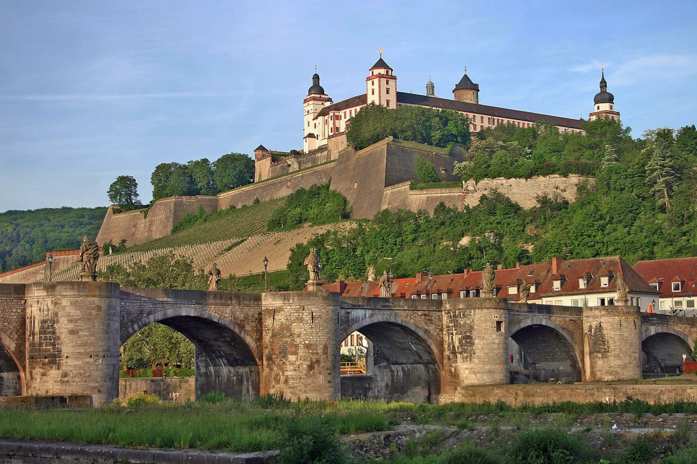
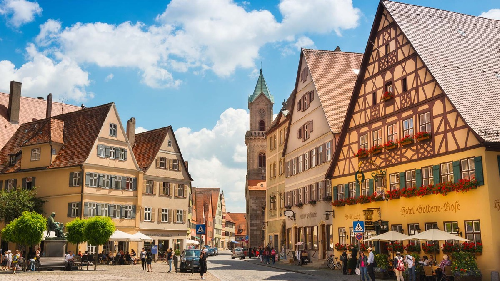
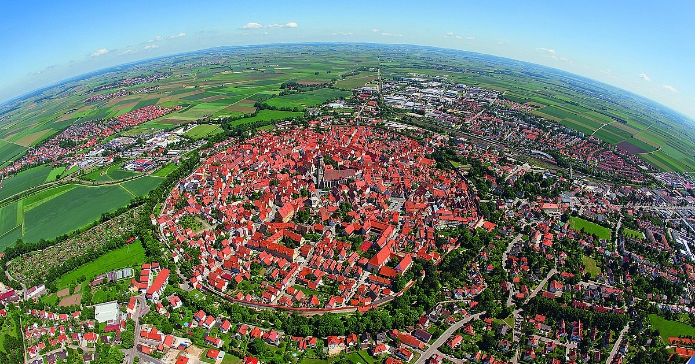
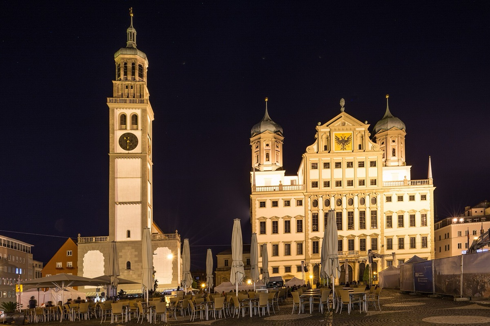
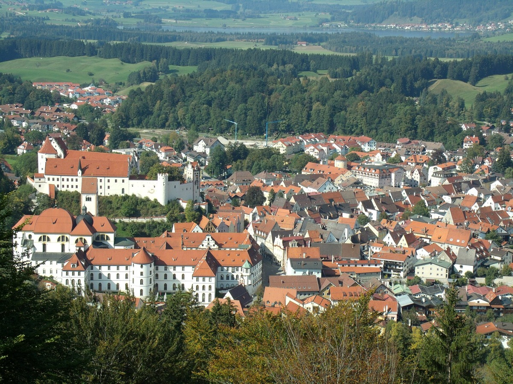

STOP 1
Würzburg
Würzburg is the start of the Romantic Road. The town lies on the river Main and is surrounded by vineyards. The most famous building is the Residence, a baroque palace and UNESCO World Heritage Site.
In the evening, do what the locals do: buy a glass of Franconian wine and drink it on the Old Main Bridge with a view of the Marienberg Fortress.
Tip: Franconian wine comes in a round bottle called "Bocksbeutel".

STOP 2
Rothenburg ob der Tauber
Rothenburg looks like a town from a fairy tale. The old town is still surrounded by its medieval wall, and you can walk on a large part of it for free.
The most famous photo spot is the Plönlein, a small square where the street splits into two. In the evening, join the night watchman's tour and learn how people lived here in the Middle Ages.
Tip: Try a "Schneeball", a sweet pastry from Rothenburg.

STOP 3
Dinkelsbühl
Dinkelsbühl is smaller and quieter than Rothenburg, but just as beautiful. The town wall, the towers and the colourful houses are very well preserved.
In the middle of the old town stands St. George's Minster, a big Gothic church. Every July the town celebrates the "Kinderzeche", a historical festival with music and costumes.
Tip: Walk along the town wall in the evening, when most of the tourists are gone.

STOP 4
Nördlingen
Nördlingen is special because of its shape: the old town is almost a perfect circle and lies inside the Ries crater. A meteorite made this crater about 15 million years ago.
You can walk all the way around the town on the old wall. For the best view, climb the 350 steps of the "Daniel", the 90 m high tower of St. George's Church.
Fun fact: The stones of St. George's Church contain tiny diamonds from the meteorite.

STOP 5
Augsburg
Augsburg is the biggest city on the Romantic Road and one of the oldest cities in Germany. The Romans founded it more than 2000 years ago.
In the centre stands the Renaissance town hall. Inside you can visit the "Golden Hall", a huge room with a golden ceiling. Augsburg's old water system with its canals and water towers has been a UNESCO World Heritage Site since 2019.
Tip: Do not miss the Fuggerei. More about it on the page Castles & Sights.

STOP 6
Füssen
Füssen is the last stop of the Romantic Road. It lies on the river Lech at the foot of the Alps and is the highest town in Bavaria.
From here it is only a few kilometres to Neuschwanstein and Hohenschwangau, the castles of King Ludwig II. More about them on the page Castles & Sights.
Tip: Book your castle tickets online a few days before your visit.